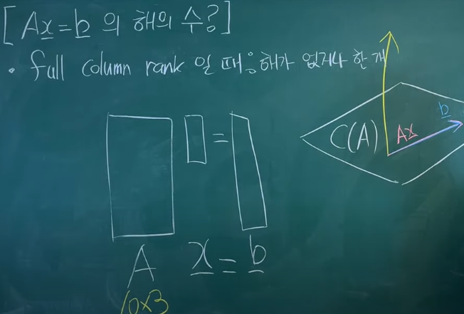

선형대수학
선형대수학
선형 방정식만을 다룬다.
\(\cancel{ax^2}+bx+c=0\)
행렬과 벡터에 대해서 공부하는 학문이다.
하고자 하는 것: 연립 1차 방정식을 푸는 것.
\[{\color{Red}1}{\color{SkyBlue}x} + {\color{Red}2}{\color{SkyBlue}y} = {\color{SkyBlue}4} \]
\[{\color{Red}2}{\color{SkyBlue}x} + {\color{Red}5}{\color{SkyBlue}y} = {\color{SkyBlue}9} \]
\[ \begin{pmatrix} {\color{Red}1} & {\color{Red}2} \\ {\color{Red}2} & {\color{Red}5} \end{pmatrix} \begin{pmatrix} {\color{SkyBlue}x} \\ {\color{SkyBlue}4} \end{pmatrix} = \begin{pmatrix} {\color{SkyBlue}4} \\ {\color{SkyBlue}9} \end{pmatrix} \]
\[\text{\ matrix \ vector \ \ \ vector}\]
전치 (Transpose)
\(A\) → \(A^T\)
\(a_{ij}\) → \(a_{ji}\)
\(A = \begin{pmatrix} 1 & 2 \\ 3 & 4 \end{pmatrix}\), \(A^T = \begin{pmatrix} 1 & 3 \\ 2 & 4 \end{pmatrix}\)
\((A^T)^T = A\)
\((A+B)^T = A^T + B^T\)
\((AB)^T = B^TA^T\)
\((cA)^T = cA^T\)
\(\text{det}(A^T) = \text{det}(A)\)
\((A^T)^{-1} = (A^{-1})^T\)
내적과 정사영 (dot product & projection)
내적: 두 벡터가 닮은 정도를 알아내는데 사용할 수 있다.
inner product \(\supset\) dot product \(=\) scalar product
\[ \begin{pmatrix} 1 \\ 3 \end{pmatrix} \cdot \begin{pmatrix} 5 \\ 1 \end{pmatrix} = 5+3 = 8 \]
\(a^Tb = \lVert a \rVert \lVert b \rVert cos\theta = \lVert a \rVert cos\theta \lVert b \rVert = \lVert b \rVert cos\theta \lVert a \rVert\)
a에서 b로의 정사영 / b에서 a로의 정사영” 내적은 정사영이다. ”
\(a^Ta = \lVert a \rVert \lVert a \rVert = \lVert a \rVert^2\)
a 벡터의 크기를 구할 때 \(\sqrt{a^Ta}\) 이런식으로도 많이 구함
단위벡터(unit vector): 크기가 1인 벡터
\(\frac{a}{\sqrt{a^Ta}} = \frac{a}{\lVert a \rVert}\) : Normalize
\(a \cdot b\) → 같은 방향일때 가장 크고 반대 방향일 때 가장 작으며 직각일때 0
벡터의 norm
2-norm
\(a=\begin{pmatrix} 1\\2\\3 \end{pmatrix},||a|| _{2} = \sqrt{a^Ta} = \sqrt{1^2 + 2^2 + 3^2}\) (\(l_2\)-norm)
1-norm
\(b=\begin{pmatrix} 1\\2\\3 \end{pmatrix}\), \(\lVert b \rVert_1 = 1+2+3 = 6\) (\(l_1\)-norm)
p-norm
\((| |^p+| |^p+| |^p+ ... )^\frac{1}{p}\), \((p\geq 1)\)
+ \(l_0\)-norm 은 0이아닌 성분의 “개수”
행렬의 곱셈과 네 가지 관점
1. 내적으로 바라보기
\(AB=\begin{pmatrix}a_1^T\\a_2^T\\a_3^T\end{pmatrix} \begin{pmatrix}b_1&b_2&b_3\end{pmatrix}=\begin{pmatrix}a_1^Tb_1&a_1^Tb_2&a_1^Tb_3\\a_2^Tb_1&a_2^Tb_2&a_2^Tb_3\\a_3^Tb_1&a_3^Tb_2&a_3^Tb_3\end{pmatrix}\)
2. rank-1 matrix의 합
\(AB = \begin{pmatrix}a_1&a_2&a_3\end{pmatrix}\begin{pmatrix}b_1^T\\b_2^T\\b_3^T\end{pmatrix}=a_1b_1^T+a_2b_2^T+a_3b_3^T\) ← 각각은 rank1 matrix 이다.
3. column space로 바라보기
- column space?
\(AB = \begin{pmatrix}a_1&a_2&a_3\end{pmatrix}\begin{pmatrix}x_1\\x_2\\x_3\end{pmatrix}=a_1x_1+a_2x_2+a_3x_3\)
4. row space로 바라보기
\(AB = \begin{pmatrix}x_1&x_2&x_3\end{pmatrix}\begin{pmatrix}a_1^T\\a_2^T\\a_3^T\end{pmatrix}=x_1a_1^T+x_2a_2^T+x_3a_3^T\)
- transformer 이해에 도움이 된다.
span과 column space(열공간)
- Linear combination
\({\color{red}a_1}v_1 + {\color{red}a_2}v_2 + {\color{red}a_3}v_3\)
\({\color{red}a_1, a_2, a_3}\) : 스칼라
\(v_1, v_2, v_3\) : 벡터
내가 가진 벡터들로 표현할 수 있는 영역은 뭘까? → span
2차원 전체(서로 다른 두 벡터), 라인(단위 벡터가 같은 두 벡터), 점(\(\begin{pmatrix}0\\0\end{pmatrix}\)인 두 벡터) 등 …
column space:
선형 독립인 A의 column들로 이루어진 벡터 공간.
행렬의 열이 span하는 영역
column space 표기법
- \(C(A)\)
- \(range(A)\)
선형 독립과 기저 (linearly independent & basis)
벡터의 활동범위가 다르면 선형 독립이다.
직교하면 무조건 독립이다. 하지만 독립이라고 직교하는 건 아니다.
\[a_1\mathbf{v_1} + a_2\mathbf{v_2} + a_3\mathbf{v_3} + ... = \mathbf{0}\] 이 식이 성립하기 위해 계수(\(a_1, a_2, a_3, ...\))가 모두 0 이어야 한다면 이는 선형 독립이다.
ex) \(-2\begin{pmatrix}1\\1\end{pmatrix}+1\begin{pmatrix}2\\2\end{pmatrix} = 0\) 이런경우는 linearly dependent 한 케이스.
basis
어떤 공간을 이루는 필수적인 구성요소
어떤 벡터공간 V의 벡터들이 선형독립이면서 벡터공간 V 전체를 생성할 수 있다면 이 벡터들의 집합을 말한다.
벡터공간 \(R^m\)의 임의의 원소를 표현하기 위해 필요한 최소한의 벡터로 이루어진 집합
항등행렬, 역행렬, 직교행렬 (indentity matrix & inverse & orthogonal matrix)
Identity matrix (항등 행렬)
- 항등원과 비슷
- 어떤 행렬과 곱해도 그 행렬 그대로 나옴
- 정사각 행렬에 대해서만 정의
\(A \times \mathbf{I} = A\)
\(I_2 = \begin{pmatrix}1&0\\0&1\end{pmatrix}\) \(I_3 = \begin{pmatrix}1&0&0\\0&1&0\\0&0&1\end{pmatrix}...\)
Inverse matrix (역행렬)
\(A\times{\color{red}A^{-1}}=I\)
- 정사각 행렬에 대해서만 정의
- A가 어떤 행렬이냐에 따라서 항등행렬이 나오도록하는 \(A^{-1}\)이 존재할 수도 있고, 존재하지 않을 수도 있다. 존재하면? A는 invertible하다 라고 표현
- A의 앞에 곱하든, 뒤에 곱하든 항등행렬이 나온다. 일반적인 행렬에서는 안되던 교환법칙이 성립한다는 것
Diagonal matrix (대각 행렬)
\(\begin{pmatrix} ..&0\\ 0&.. \end{pmatrix}\) \(\begin{pmatrix} ..&0&0\\ 0&..&0\\ 0&0&.. \end{pmatrix}\)
- 대각선에만 값이 있어야 함. 나머지는 0
- 대각선에도 0이 들어갈 수 있음.
- 정사각 행렬이 아니어도 됨. 보통은 정사각형. 정사각행렬이 아닌경우 rectangular diagonal matrix 라고 말해주는 편
Orthogonal matrix (직교 행렬)
모든 column들이 orthonormal set을 이루는 행렬. (orthogonal + normal)
모든 column 벡터들이 서로 직교한다.(수식적으로 내적이 0이라는 것) + 모든 벡터의 크기가 1로 맞춰져 있다.
정사각 행렬에 대해서만 정의
직교행렬의 열끼리는 서로 직교
직교행렬에서는 \(Q^{-1}=Q^T\)
Rank (행렬의 계수)
- rank : 행렬이 가지는 independent한 column의 수 = column space의 dimension(=row space의 dim)
★ independent한 column의 수 = independent한 row의 수 - \(rank(A) = rank(A^T)\)
\(\begin{pmatrix}1&2&3\\0&0&0\end{pmatrix}, rank=1\), rank-deficient
\(\begin{pmatrix}1&0&1\\0&1&1\end{pmatrix}, rank=2\): 이 경우는 행이 2개기에 rank가 2개보다 클 수는 없다 + full row rank
- rank-deficient, full row rank, full column rank, full rank
Null space (영공간)
\(Ax=0\)을 만족하는 \(x\)의 집합 (행렬 A의 column들의 linear combination이 0이 되게 하는 계수 \(x\)의 집합)
- row vector의 차원을 따른다. \(n\times m\) \({\color{red}m \times 1}\) → \(n \times 1\)
행렬과 벡터의 곱을 linear combination으로 나타낼 수 있다.
ex) \(A=\begin{pmatrix}1&0&1\\0&1&1\end{pmatrix}\), \(Ax = x_1\begin{pmatrix}1\\0\end{pmatrix}+x_2\begin{pmatrix}0\\1\end{pmatrix}+x_3\begin{pmatrix}1\\1\end{pmatrix} = {\color{red}\begin{pmatrix}0\\0\end{pmatrix}}\)으로 만들고싶다.
\(x=\begin{pmatrix}0\\0\\0\end{pmatrix}\) - null space에 0 0 0 은 항상 들어간다.
\(x=\begin{pmatrix}1\\1\\-1\end{pmatrix}\), \(x=\begin{pmatrix}2\\2\\-2\end{pmatrix}\), … → \({\color{red}c\times} Ax=0{\color{red}\times c}\)
\({\color{red}x_n = c\begin{pmatrix}1\\1\\-1\end{pmatrix}}\) null space는 3차원 공간 안에서 1차원을 span 하겠다는 것(상수배)
column vector는 2차원 안에 있는데 null space는 3차원 안에 있다. 즉 null space는 column space와 아예 다른 차원에 있는 space.
- 헷갈릴 수 있는 것: null space는 column space의 일부 같은 것이다. (x)
A가 m \(\times\) n 일 때, \(dim(N(A))=n-rank(A)\) (열의 수 - A의 rank)
\(A=\begin{pmatrix}1&0\\0&1\\0&0\end{pmatrix}\), \(r=2, n=2\) 여기서는 \(n-r\)이 0이므로 유일하게 가능한 것은 \({\color{red}x=\begin{pmatrix}0\\0\end{pmatrix}}\)
Null space는 row space와 수직한 space.
\(dim(N(A)) + dim(R(A)) = n\)
A라는 행렬이 있을 때 rank를 알아내면 Null space의 차원이 어떻게 되고… 이런식으로 행렬의 분석에 있어서 굉장히 자주 등장하는 요소
\(Ax=b\)에서 \(x\)라는 해가 무한할지 하나일지 아니면 없을지 등을 이런 개념을 토대로 알아낼 수 있다.
Ax=b의 해의 수 알아내기
ex1)
\(x+2y=1\),
\(2x+4y=2\) 와 같이 주어졌을 경우는 해가 무한 (하나의 직선 위의 모든 값이 해가 됨)
ex2)
\(x+2y=1\),
\(2x+4y=1\) 와 같이 주어졌을 경우는 해가 없음 (두 개의 평행한 직선)
ex3)
\(x+2y=1\),
\(x+4y=1\) 와 같이 주어졌을 경우는 해가 하나 (두 직선이 한 점에서 만남)
- full column rank 일 때: 해가 없거나 한 개

full row rank 일 때: 해는 무한하다. (\(A(x_p+x_n)=b\))
← \(Ax_n=0, Ax_p=b\),
\(x_n\)은 무한, \(x_p\)는 식이 성립하는 임의의 값
full rank(square matrix) 일 때: 해가 한 개 있다. \((x=A^{-1}b)\)
rank-deficient 일 때:
\(\begin{pmatrix}1&2&3\\0&0&0\end{pmatrix}\) rank가 1인경우 → 1차원만을 span 가능. 예를 들어 b가 \(\begin{pmatrix}1\\1\end{pmatrix}\)이다? 해가 없음.
A가 span할 수 있는 차원 \(c(A)\)에 b가 있다면 해가 무한하다. 들어있지 않다면 해가 없다.
rank 구하기 예제 풀이
3x3인 실수행렬 A가 다음을 만족할 때, \(rank(A)\)는?
(가) \(Ax = \begin{pmatrix}1\\2\\b\end{pmatrix}\)의 해가 존재하는 실수 \(b\)는 유일하다.
(나) \(Ax = \begin{pmatrix}1\\1\\b\end{pmatrix}\)의 해는 어느 실수 \(b\)에 대해서도 존재하지 않는다.
…
(가)조건에 의해 \(\begin{pmatrix}1\\2\\b\end{pmatrix}\) 는 span할 수 있다. (나)조건에 의해 \(\begin{pmatrix}1\\1\\b\end{pmatrix}\)는 span 할 수 없다.
그런데 이 때, A가 full rank라면 span 할 수 없는 것이 없기 때문에 rank가 3은 아닐 것.
(가)조건에 의해 \(\begin{pmatrix}1\\2\\b\end{pmatrix}\) 정도는 span 할 수 있으므로 rank가 0은 아닐 것.
→ rank가 1이냐 2냐.

rank = 2이면 평면, rank = 1 이면 직선이다.
Ax의 값에서 \(\begin{pmatrix}1\\2\\b\end{pmatrix}\)가 유일하므로 x는 수직할 수 없다.
여기서, rank = 2일 경우를 생각해보면 수직이 아니므로 b를 바꾸다 보면 1 1 b 가 만나는 부분이 있을 것.
따라서 rank = 1이다. (직선)
가우스-조던 소거법 (Gauss-Jordan Elimination)
https://youtu.be/Q1zCibRtI2A?si=zc1RxVBsds3qsRRH&t=128
2 \(\times\) 2 역행렬
\(\begin{pmatrix}a&b\\c&d\end{pmatrix}^{-1}\) = \(\frac{1}{ad-bc}\begin{pmatrix}d&{-b}\\{-c}&a\end{pmatrix}\)
그렇다면 ad-bc가 0일 경우에는?? invertible하지 않다고 한다.
여기서 ad-bc를 determinant라고 함. (역행렬과 determinant는 다르다.)
정사각행렬 A가 invertible하다(non singular matrix라고 함 invertible하지 않으면 singular matrix)
와 동치인 것들
\(det(A) \neq 0\)
A가 full rank 이다.
(즉, \(det(A)=0\)인 경우는 A가 rank-deficient)
\(N(A) = \mathbf{0}\)
full rank이면 null space는 영벡터만 존재한다.
역행렬 관련 property
\((AB)^{-1} = B^{-1}A^{-1}\)
\((A^{-1})^{-1} = A\)
\((kA)^{-1} = \frac{1}{k}A^{-1}\)
\((A^{T})^{-1} = (A^{-1})^{T}\)
\(det(A^{-1}) = \frac{1}{det(A)}\)
행렬식(determinant)
option
\(A=\begin{pmatrix}a&b&c\\d&e&f\\g&h&i\end{pmatrix}\),
\(\det(A) = a(ei-fh)-b(di-fg)+c(dh-eg)\)
a, b, c가 + - + 인 것? → cofactor 찾아볼 것
다음과 같이 determinant 구하는 것을 “Laplace expansion” or “Cofactor expansion” 이라고 한다.
행렬이 조금 클 때 determinant는 위와 같이 작은 행렬의 determinant 합으로 나타내어진다.
- Determinant 관련 properties
- \(det(A)=0\) \(↔\) A is singular(invertible 하지 않다.)
- A가 rank-deficient \(↔\) \(det(A)=0\) (하나라도 dependent한 열벡터가 있다면 즉, 다른 열벡터들의 조합으로 나타낼 수 있는 열벡터가 있다면 rank-deficient인 것 이고 그때는 \(det(A)=0\)이다.)
- \(\begin{pmatrix}a_{11}&0&...&0\\0&a_{22}&&\\...&&...&\\0&&&a_{nn}\end{pmatrix}\)대각행렬에서, \(det(A)=a_{11}a_{22}...a_{nn}\) (하나의 원소라도 0이 있으면 역행렬이 존재하지 않음. \(det(A) \neq 0\)가 되기에)
- 삼각행렬(triangular matrix)에서도 마찬가지로 \(det(A)=a_{11}a_{22}...a_{nn}\)
- 항등행렬 \(\begin{pmatrix}1&0&0\\0&1&0\\0&0&1\end{pmatrix}\)의 \(\det(I)=1\)
- A가 \(n \times n\)행렬일 때 \(det(cA) = c^ndet(A)\)
- \(det(A^T)=det(A)\)
★8. \(det(AB) = det(A)det(B)\)
- \(det(A^{-1}) = \frac{1}{det(A)}\)
★10. \(det(A) = \lambda_1 \lambda_2 ... \lambda_n\) (\(\lambda\) = eigen value)
trace
- 최적화의 목적 함수는 무조건 스칼라 값.
\(tr(A) = \sum^n_{i=1}a_{ii}\)
trace를 이용하면 행렬로 미분하는게 매우 쉬워짐
trace에는 무조건 정사각행렬이 와야함
trace 관련 properties
\(tr(A+B)=tr(A)+tr(B)\)
\(tr(cA) = ctr(A)\)
\(tr(A^T) = tr(A)\)
\(tr(AB) = tr(BA)\)
\(A: m \times n\)이면 \(B: n\times m\)
\(tr(a^Tb)=tr(ba^T)\) (4를 이용한 자리바꾸기)
(4,5번은 6번을 위한 빌드업)
★6. \(tr(ABCD)=tr(BCDA)=tr(CDAB)=tr(DABC)\) (cyclic property)
- \(tr(A) = \sum^n_{i=1}\lambda_i\)
최소자승법(Least squares)
A의 column space 밖의 b 벡터를 span으로 표현할 수 없을 때, 최대한 가깝게 만드는 x를 찾는법
\(b-Ax = e\) (error),
\(||e||^2_2\)을 줄이자 → error 제곱의 합을 최소화 하자는 접근 방식
Ax와 b가 수직할 때 최소이므로 b-Ax와 Ax를 내적했을 때 0인 값을 찾자 + 그러한 x를 \(\hat{x}\)로 표기하자
\((b-A\hat{x})^TA\hat{x}=0\)
\((b^TA-\hat{x}^TA^TA)\hat{x}=0\)
\({\color{skyblue}\hat{x}=0?}\) 우리가 원하는 접근방식은 아님. 영벡터를 내적했기에 0이 나오는 것이므로. 그렇다면 \((b^TA-\hat{x}^TA^TA)=0\)이 되는 \(x\)값을 찾아 주어야 한다.
\(b^TA = \hat{x}^TA^TA\)
↓ 양변에 transpose
\(A^Tb=A^TA\hat{x}\) 이 식을 “normal equation” 이라고 부름 / \(rank(A^TA)= rank(A)\)이며 \(A^TA\)는 3x3 행렬이므로 full rank이다. 즉, invertible하다.
↓ 그러므로 양변에 \(A^TA\)의 역행렬을 곱해줌.
\(\hat{x} = (A^TA)^{-1}A^Tb\)
이 \(\hat{x}\)를 \(A\hat{x}\)에 대입해주면
\(A\hat{x} = {\color{red}A(A^TA)^{-1}A^T}b\),
\(b\)에다가 \({\color{red}A(A^TA)^{-1}A^T}\)를 곱해서 정사영을 만든 것이기에 이를 “projection matrix”라고 부른다.
이 최소자승법은 어디에 쓰느냐?
\(Z = Ax + n\) (여기서 A는 full column rank라는 가정이 필요하다.)
\(Z\):측정값(measurement), \(n\):noise, \(x\):알아내야 하는 값
\(A\hat{x} = A(A^TA)^{-1}A^TZ\)